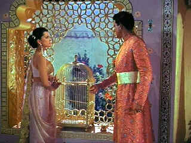

| Tiger
of Eschnapur/ D+,B |
| Fantoma/1959/100/FS 1.33 |
Warning! You don't want to buy The Tiger of Eschnapur without
its companion DVD The Indian Tomb. They are really one movie split
in two.
With settings to die for captured in glorious color, Fritz Lang's Tiger
of Eschnapur is briefly reminiscent of the magic of Michael Powell's Thief of Baghdad.
Briefly is the operative word here. The script is a poorly crafted throwback to turn-of-the-century
camp melodrama with a serious helping of cliffhanger serials. The cliffhangers were lots of fun,
but under the static awkward direction of Lang, his tiger has false teeth. There's little
excitement, the romance is too much jam on a thin piece of bread, and the politics are tot he left
of ridiculous. Even the music plays like it was lifted from a compendium of cliffhanger
specials.
Architect Harald Berger arrives in India to begin a construction project
for Maharajah Chandra of Eschnapur. At a village on route he sets eyes on beautiful Indian dancer
Seetha, who is also on her way to serve the Maharajah. Harald is ready to jump her bones like a
hungry tiger. Deciding to travel together to Eschnapur, Harald captures the heart of Seetha with an
act of heroism.
 |
| The prince, the dancer and the bird.
©Fantoma |
Hey, what's love without some problems. Chandra is bringing
Seetha to Eschnapur after seeing her dance at a temple. Watching Seetha dance is enough to turn any
man to jelly, it seems. The recently widowed Chandra plans to make Seetha the new Maharani. Rule
one of the architect's handbook: thou shall not covet the dancer your Maharajah is panting after:
it's a bad set of plans.
As Seetha and Harald arrive in Eschnapur, the political pot boils. Prince
Ramagani wants to dethrone his brother Chandra. Former father-in-law Padhu wants Chandra to remain
faithful tot he memory of his daughter. High priest Yama wants to feed Seetha to the gods. Will
Seetha marry Chandra? Will Harald escape the wrath of Chandra? Will Ramagani steal the crown? Will
Tiger of Eschnapur ever end? The answers to these questions and more can be found in The Indian
Tomb.
Aside from the lush location production details, Debra Paget's Seetha makes
pretty good watching. She throws together some nice Indian dance moves in scanty clothing. Paul
Christian (Hubschmid) is unafraid as Harald. Walter Reyer looks positively moony every time
Seetha's in the room. Rene Deltgen as Ramagani is only missing a handlebar mustache for twirling.
The Fantoma team has treated these late Lang efforts with great respect.
The transfer elements appear worked over big time. Colors are beautifully saturated. The
appear almost painted on the screen. Individual colors are well defined with no color bleeding. Dig
those big jewels: even the light reflected through them is softly captured on clothing. The chief
transfer shortcoming is color instability at scene transitions. It's almost as if the transfer equipment
hesitates before locking in on a new color scheme. The material is otherwise quite clean. Save for
a couple of small scenes, image is delivered with maximum resolution. Blacks are as rich as
can be. Shadow detail balances perfectly with the intense color scheme. Lighting in a few
Day-for-Night sequences is questionably bright. You can watch Paget and company go through the
paces in English of German 2 channel mono. In English, the dialogue has a hollow ring to it. In
German, it looks ridiculous. English subtitles are available if you choose German language.
|
|
|
|


Quite simply one of the funniest comedies ever made and the transfer is gorgeous.

The major studio vaults are filled with incredible film treasures which
few have seen the light of DVD.
Open the Vaults

Selections from the Feature Archive include articles on
Akira Kurosawa, Frank
Darabont, Blonde Bimbos, Hollywood Street Gangs, or Vietnam: The
Hollywood Pariah, and many more....
Body Parts

Hollywood's long fascination with parts of the body is explored
piece by piece.

The
Movie Poster Archive includes extensive poster images from the films of stars like Susan Hayward,
Kirk Douglas, Katharine Hepburn and many more. Our featured star is Tyrone Power.

Imaging Science Foundation
The Imaging Science Foundation promotes proper standards in home theater viewing. ISF trained
technicians offer monitor calibration services to consumers. The difference in a properly
calibrated monitor can be astounding. Click on the image to find an ISF member near you.
 Brad Lang continues to add more interesting material to the extensive
collection at Classic
Movies. Everything from actors and actress to your favorite directors is
linked at the site. Brad Lang continues to add more interesting material to the extensive
collection at Classic
Movies. Everything from actors and actress to your favorite directors is
linked at the site.

The National Film Preservation Foundation (NFPF) is the nonprofit organization created by the U.S. Congress to save
America's film heritage.
The
Movie Poster Archive includes extensive poster images from the films of stars like Susan Hayward,
Kirk Douglas, Katharine Hepburn and many more. Our featured star is Lana Turner.
|